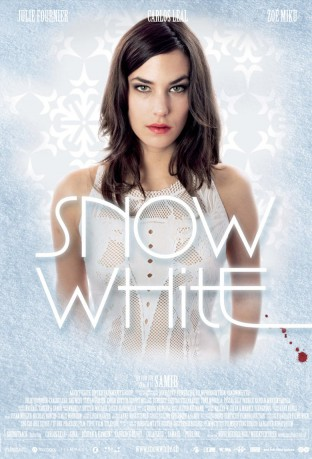

#11636 Snow White
 
 IMDB-Wertung: 5.8 / 10
IMDB-Wertung: 5.8 / 10  Metascore: 0
Metascore: 0 
Das Leben der 20-jährigen Nico aus dem züricher Grossbürgertum ist nichts als Party, Sex und Drogen, als sie Paco trifft, den Frontmann einer Rap-Band. Sie fühlt sich von seiner unabhängigen, kreativen und tiefgründigen Art zu leben angezogen. Mit Naivität und unendlichem Selbstbewusstsein versucht sie seinen Lebensstil zu adaptieren - ohne die Konsequenzen vorherzusehen.
Jahr: 2005
Dauer: 113 Minuten
FSK: 12
Land: Schweiz Studio: TelepoolTonspuren:
Untertitel: Deutsch, Englisch,
Auflösung: 1080p (1920x1080) Größe: 7936 MB
Genre: Drama
Regisseur: Samir
Drehbuch: Samir, Michael Sauter
Soundtrack: Walter W. Cikan, Marnix Veenenbos
Darsteller:
- Julie Fournier als Nico
 Carlos Leal als Paco
Carlos Leal als Paco- Zoé Mikuleczky als Wanda
 Sunnyi Melles als Mutter Nico
Sunnyi Melles als Mutter Nico Stefan Kurt als Theater Regisseur
Stefan Kurt als Theater Regisseur- Pascal Ulli als Greg
- Patrick Rapold als Brandenberger
- Beatrice Kessler als Ärztin
- Hans-Christian Haas als
- Max Loong als DJ
- Uwe Schwarzwalder als Banker
- Stefan Gubser als Boris
- Xaver Hutter als Bobby
- Benedict Freitag als Vater Nico
- Tony Harrisson als Vince
- Wolfram Berger als
- Martin Rapold als Pfister
- Karin Pfammatter als Steven
- Liliana Heimberg als Frau Christen
- Roger Kaufmann als Oliver
- Mathis Künzler als
- Naël Marandin als Pacos Bruder
- Mike Müller als Special Guest
Datei: X:\NEU\Snow White (2005, FSK12, 1920x1080).mkv seit 13.08.2019
 Es gibt insgesamt 187 Filme in der Gruppe 'NEU'
Es gibt insgesamt 187 Filme in der Gruppe 'NEU'